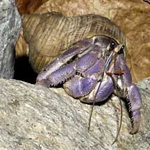
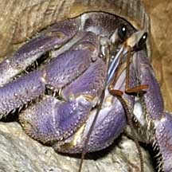
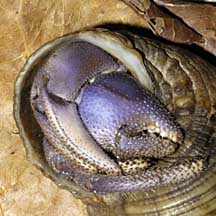
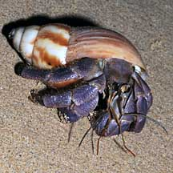
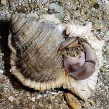
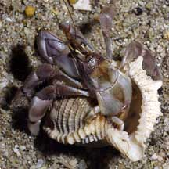
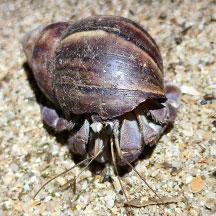
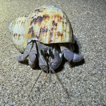
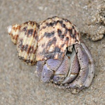

|
|
| hermit crabs text index | photo index |
| Phylum Arthropoda > Subphylum Crustacea > Class Malacostraca > Order Decapoda > Anomurans > hermit crabs |
| Land
hermit crab Coenobita sp. Family Coenobitidae updated Dec 2019
Where seen? This large hermit crab is sometimes seen on our undisturbed shores near the high water line, especially on our offshore islands. Near the high water mark among rocks, boulders and marine debris, and even some distance inland among grass and under trees. But it is only active at night. Features: Boday 3-6cm long, 1cm wide. Left pincer usually larger than the right. Pincers and walking legs "squarish" thick, not very hairy. May be brownish to pale or dark purple. Eyes on very short flattened stalks. Short antennae quite long, while long antennae not very long. There are three species of land hermit crabs in Singapore. They are not easy to distinguish in the field. The Land hermit crab is so well adapted to life out of water that it will drown if kept underwater! It has special gill chambers that act as lungs. These chambers are large and holds water to keep the gill filaments wet. The hermit crab only needs to occasionally dip in either rainwater or the sea to keep the chambers wet. Females, however, must go to the edge of the sea to release their eggs into the sea. These hatch into planktonic larvae. When the larvae develops into a small hermit crab, it finds an empty shell then heads landward. The Family Coenobitidae includes the largest hermit crab, the Robber or Coconut crab (Birgus latro) which doesn't live in a shell. |
 Sentosa, Feb 08 |
 |
 |
| What does it eat? The hermit crab
is a scavenger and also eats plants. It may go far inland to forage.
Sometimes, many are seen at night near the visitors' huts on our offshore
islands. Possibly looking for scraps left behind by visitors? Shells not enough? Often, those seen are found in shells that are too small for the animal. The poor hermit crab often can't retract all the way into the shell, and a part of it is still sticking out. This is possibly because high up on the shore, there aren't enough empty shells that are suitably large. The lack of suitably large shells on our shores may limit the population of these amazing animals. The land hermit crab is now considered rare on mainland Singapore. |
 Some are very purple. St. John's Island, Aug 08 |
 Some have a dark patch on the outside of the left pincer. Sisters Islands, Jan 05 |
 |
| Status and threats: Our land hermit
crabs are listed as 'Vulnerable' on the Red List of threatened animals
of Singapore. Singapore's more accessible beaches are regularly cleaned
of any debris that washes up on the high tide mark. But this is where
land hermit crabs find shelter, food and new shells. Deprived of their
habitat, these endearing animals are no longer commonly encountered
on our beaches. According to the Singapore Red Data Book, the many beach improvement schemes, clearance of 'unsightly' natural beach vegetation have almost exterminated these once common animals. Well-intentioned beach clean up have also resulted in mass removal of seemingly empty shells containing these animals. |
 Pulau Tekukor, Sep 2018
Pulau Tekukor, Sep 2018 |
| Land hermit crabs on Singapore shores |
On wildsingapore
flickr
|
| Other sightings on Singapore shores |
 St John's Island, Apr 25 Photo shared by Mathias Luk on facebook. |
 Small Sisters Island, Oct 25 Photo shared by Tammy Lim on facebook. |
 Lazarus Island, Feb 11 Photo shared by Rene Ong on facebook. |
 Pulau Pawai, Dec 09 |
| Family Coenobitidae recorded for Singapore from Dwi Listyo Rahayu, 2000. Hermit crabs from the South China Sea (Crustacea: Decapoda: Anomura: Diogenidae, Paguridae, Parapaguridae) in red are those listed among the threatened animals of Singapore from Davison, G.W. H. and P. K. L. Ng and Ho Hua Chew, 2008. The Singapore Red Data Book: Threatened plants and animals of Singapore. +from The Biodiversity of Singapore, Lee Kong Chian Natural History Museum.
|
Links
|